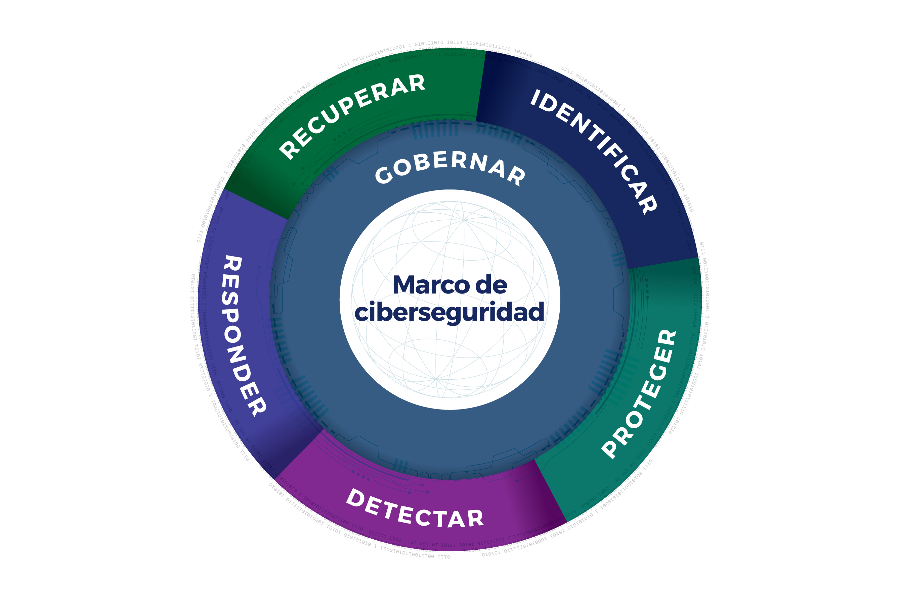
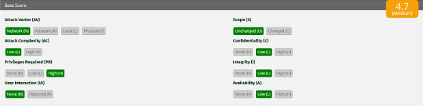

> CNO V - Seguridad Informática _
> Universidad Politécnica de San Luis Potosí _
> Octavo semestre _
Actividad 17 | Equipo 02
La evaluación de vulnerabilidades es una actividad esencial dentro de la gestión de riesgos, ya que permite traducir hallazgos técnicos en criterios claros de prioridad para la toma de decisiones. En ese proceso, el Common Vulnerability Scoring System versión 3.1 (CVSS v3.1) funciona como un marco estandarizado para describir la severidad de una vulnerabilidad mediante métricas comparables entre distintos productos, entornos y organizaciones.
Su principal valor consiste en ofrecer una puntuación base reproducible y una representación compacta en forma de vector. A diferencia de una valoración meramente intuitiva, CVSS v3.1 separa las características intrínsecas de la vulnerabilidad en tres grupos de métricas: Base, Temporal y Ambiental.
Para esta actividad se trabaja principalmente con el grupo Base, porque el escenario proporciona la información necesaria para construir el vector y obtener la puntuación inicial. A partir de esa puntuación es posible interpretar la gravedad del caso, ubicarlo en una categoría cualitativa y justificar qué tan urgente debe ser su mitigación dentro de una organización.
CVSS es un marco abierto para comunicar las características y la severidad de vulnerabilidades de software, hardware y firmware. Su diseño se basa en tres grupos de métricas:
La utilidad de CVSS no se limita a generar una cifra. También permite representar la evaluación mediante una cadena vector, que resume en formato compacto los valores asignados a cada métrica, facilitando la priorización de acciones correctivas.

Una organización detecta una vulnerabilidad en un sistema web interno con las siguientes características:
La cadena/vector construida en base a la información y con ayuda a la calculadora oficial es la siguiente:
A pesar de que la vulnerabilidad requiere privilegios elevados (PR:H), continúa siendo relevante porque puede explotarse remotamente a través de la red (AV:N) y con baja complejidad (AC:L), lo que significa que un atacante que ya haya obtenido acceso privilegiado mediante robo de credenciales, escalamiento previo o cuentas comprometidas podría explotarla fácilmente sin necesidad de interacción del usuario (UI:N).
Esto incrementa el riesgo dentro de entornos corporativos donde existen múltiples cuentas administrativas o donde un atacante ya logró una intrusión inicial. El tipo de atacante que podría explotarla corresponde principalmente a un actor con conocimientos técnicos intermedios o avanzados, como ciberdelincuentes organizados, insiders maliciosos o grupos APT.
El hecho de que el alcance permanezca sin cambios (S:U) indica que la vulnerabilidad sólo afecta recursos dentro del mismo ámbito de seguridad comprometido. Finalmente, que el impacto en confidencialidad, integridad y disponibilidad sea bajo (C:L/I:L/A:L) significa que la explotación produce afectaciones limitadas: acceso parcial a información o pequeñas interrupciones, sin comprometer completamente el sistema.
Utilizando la calculadora oficial, se obtienen los siguientes resultados:

El uso de CVSS v3.1 en este escenario permite transformar una descripción técnica de la vulnerabilidad en un criterio de severidad claro y comparable. La construcción del vector mostró que, aunque el impacto sobre confidencialidad, integridad y disponibilidad es bajo, la explotación remota y la ausencia de interacción del usuario representan condiciones que siguen justificando atención prioritaria. El requisito de privilegios elevados reduce el potencial de explotación, pero no elimina el riesgo.
La puntuación base obtenida, 4.7, ubica la vulnerabilidad en la categoría Media, por lo que su corrección no debería postergarse indefinidamente, especialmente si afecta un sistema web interno con valor operativo para la organización. En términos de gestión, este resultado demuestra que CVSS no sólo sirve para clasificar vulnerabilidades, sino también para sustentar decisiones de mitigación con un lenguaje técnico estandarizado.